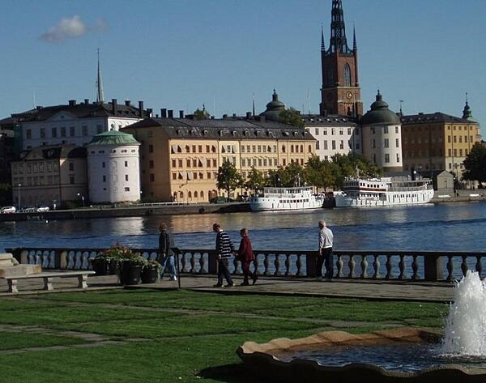
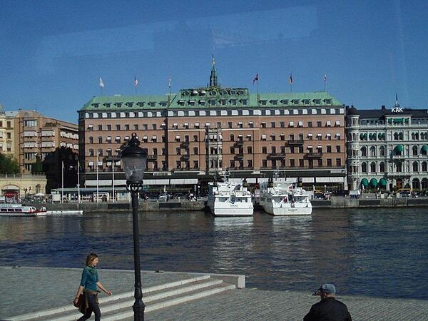
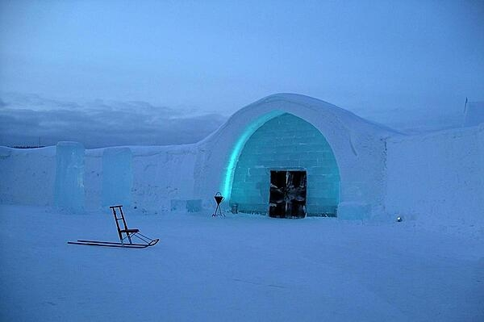
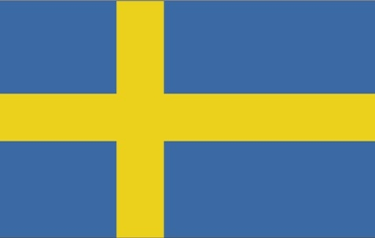

Here, you will learn all about Sweden, and why it is so special.
We will explore the fundamentals of Sweden, and then taking a look at the people and society makeup,
which will take us into their government and how the country is structured.
Finally, we will explore some of the images from Sweden, such as the flag, and a few popular attractions.
Introduction & Geography
Background
Sweden is a country that is located in Northern Europe, bordering the Baltic Sea,
and is between Finland and Norway. Stockholm, which is the capital of Sweden, presereved and aimed neutrality in World War I and II.
Sweden has had a role to play diring the World War, especially World War II. There is more information about this at this Wikipedia page.
Sweden joined the European Union in 1995, but rejected that introduction in 2003. The population born abroad has increased from 11.3% in 2000 to 20% in 2021.
Below, you will find a locater map that shows where Sweden is located in Europe.
This is where Sweden is located, in the orange highlighted part of the map.
Climate and Terrain
Sweden is fairly mild when it comes to temperature throughout the calendar year.
Sweden is a large country, which means that the northern and southern points experience huge shifts in climate.
Northern Sweden experiences subartic temperatures. Probably not the best place to go if you are wanting to spend time outdoors!
And, in southern Sweden, you experience cold, cloudy winters and cool, partly cloudy summers. This is perfect to take a wonderful tour of what Sweden has to offer.
Area and comparative area to the United States
The size of Sweden could be compared to three times the size of Georgia of the United States. And, it is slightly larger than California. The total area is 450,295 sq km with a total land area of 410,335 sq km.
Out of all countries in the world, Sweden ranks the 58th largest country in the world. Sweden is mainly flat with gently rolling lowlands, but there are mountains in western Sweden. At least, there are some elevation (more than Florida!).
This is evident as the mean elevation is 320 meters. A fun fact about Sweden when it comes to area, is that it has almost 100,000 lakes - the largest of which, Vanern, which is the third largest in Europe. That is astonishing!
People and Society
Demographic profile
This is an interesting section as it is quite different from the United States (at least I think so).
Swedish society is very gender equal, and men and women in the country agree that both parners should contribute to household income (which is how it should be).
There is a generous leave policy and high-quality subsidized childcare which allows mothers and fathers to balance work and family life.
In fact, Swedish women have one of the highest labor participation rates in Europe, and one if its highest total fertility rates. It is also interesting to know that since World War II,
Sweden has been a country of immigration. Thousands of refugees from neighboring countries worked in Swedish factord, agriculture, and forestry which replaced Swedish men who were called up for military service.
It sounds kind of like an exchange that was being done during World War II. Since then, beginning in 2008, Sweden began a new era of labor immigration as companies were encouraged to hire non-EU workers.
Not surprising, but as of 2020, over a quarter of Sweden's population had a migrant background.
Religions
Church of Sweden is a religion, and one reprersents a large part of religion in Sweden, accounting to 53.9%.
Meanwhile, the other religions such as Roman Catholic, Orthodox, Baptist, Muslim, etc. account for 8.9%.
It is good to know that Sweden is a country where you do not necessarily have to be part of a religion, because 37.2% are either unspecified, or are not associated with a religion.
As described later on this page, religion plays a role in Sweden, as there are notable landmarks that have been standing since the 13th century such as burial locations and churches.
While not everyone is associated with a religion in Sweden, it is still actve in Sweden. On the official government website here,
you will find more information about the 10 takes on religion in Sweden and the role it plays in the country.
Population distribution
The majority of people who are in Sweden live in the South, where the climate is milder and there is better connectivity to mainland Europe.
There are population clusters found all along the Baltic coast in the east; the interior areas of the north remain sparsely populated. The current urban population of Sweden (Stockholm) reprersents
1.7 million out of the entire country as of 2023. The majority of the population lives in an urban area, and the annual change (which is estimated) is a change of 0.89% per year from 2020 - 2025.
Government
Constitition
Sweden has four fundamental laws which together make up the Constititon. These four are: The Instrument of Government, The Act of Succession, The Freedom of the Press Act,
and The Fundamental Law on Freedom of Expression, which was adopted in 1991.
There are also amendemnts to the constition. Any amendments sought to be made to the constitution are first proposed by Parliament.
From there, it requires a simple majority vote in two parliamentary terms with an intervening general election.
It is important to note that there has not been a referendum on constitutional matters.
Branches of government
There are three branches of government in Sweden. They are the Executive branch,
the Legislative Branch, and the Judicial branch. Let's go over these branches in detail to further explain how they play a role in strcutured government in Sweden.
Executive branch: the chief of state currently, is King CARL XVI GUSTAF, since 1973. The cabinet is appointed by the prime minister.
For elections, the monarchy is hereditary; following legislative elections, the leader of the majority party usually becomes the prime minister.
Legislative branch: this is a unicameral Parliament (or Riksdag) which has 349 seats; 310 members are directly elected in multi-seat constituencies. Members of the legislative branch serve four (4) terms.
The last election was held on 11 September 2022, and the next election is scheduled to be held on 13 September 2026.
Judicial branch: There are 2 high courts. One is the Supreme Court of Sweden (which consists of 16 justices, including one court chairman).
The second highest court is the Supreme Administraive Court (which consists of 18 justices, including the court president). The Supreme Court and Supreme Administraive Court justicies are nominated by the Judges Proposal Board.
Important to note that the term of office for the justices' appointments, are permanent.
Citizenship
There is no citizenship by birth, which is different from the United States to say the least. In Sweden, you are able to become a citizen by descent ONLY.
This means that the father must be a citizen of Sweden. If there is a case where a child is born out of wedlock, the moether must be a citizen of Sweden and the father unknown.
Dual citizenship is not reognized in Sweden, unless the other citizenship was aquired involuntarily. To become a citizen of Sweden, you must be a permanent resident for
5 years before you can apply for naturalization.
Gallery
Sweden is a wonderful country that has rich history.
There are also some beautiful sights and facts to know about Sweden and how it plays a role into it's history.
Below, you will find some of the important images that capture the essence of Sweden, highlighting the roots of how Sweden came to be today.
You will also get to see an image of the Swedish flag, and what that symbolizes.

This is an image of the Wrangel and Stenbroke Palaces and the Riddarholmen Church in central Stockholm, the capital of Sweden.
It serves as a burial place for Swedish monarchs, and it is actually one of the oldest buildings in Stockholm, making this a notable landmark.

This is an image of The Grand Hotel which is also located in Stockholm,
and has served guests since 1901 with customers such as Nobel Prize laureates and their families.

An image of the Ice Hotel, which was taken in 2005. It is located in Stockholm, and it is the world's first ice hotel.
This was interesting to learn because it gets rebuilt every single year from December to April (which means it is made from real ice!).
This has been the case since it's opening in 1990. You can learn more about the Ice Hotel this Wikipedia page.

Finally, this is an image of the Sweden flag. It is blue with a golden yellow cross extending to the edges of the flag.
The meaning of the flag reflects those of the Swedish coat of arms - three gold crowns on a blue field.